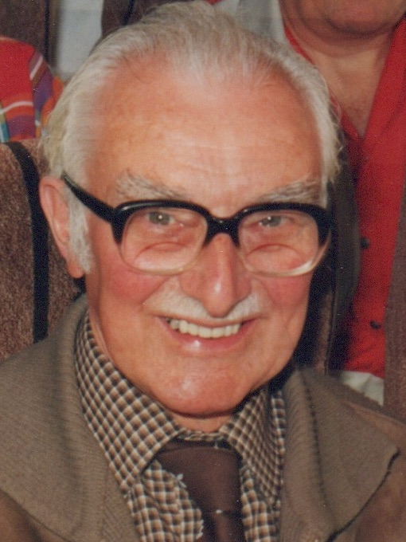
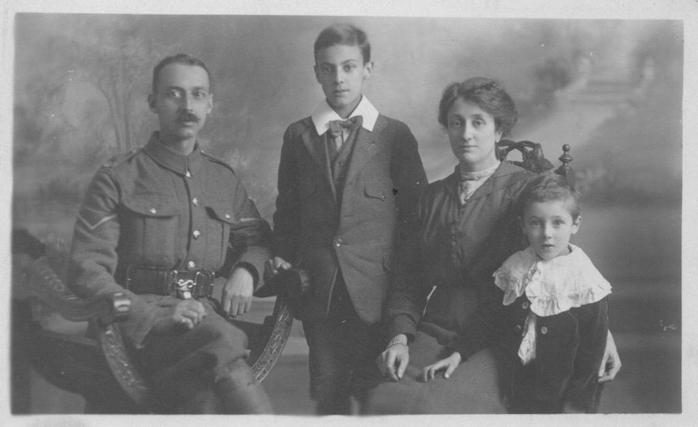
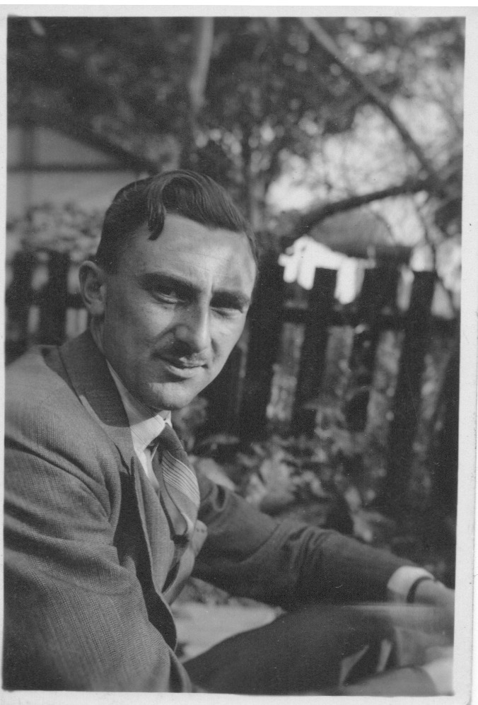
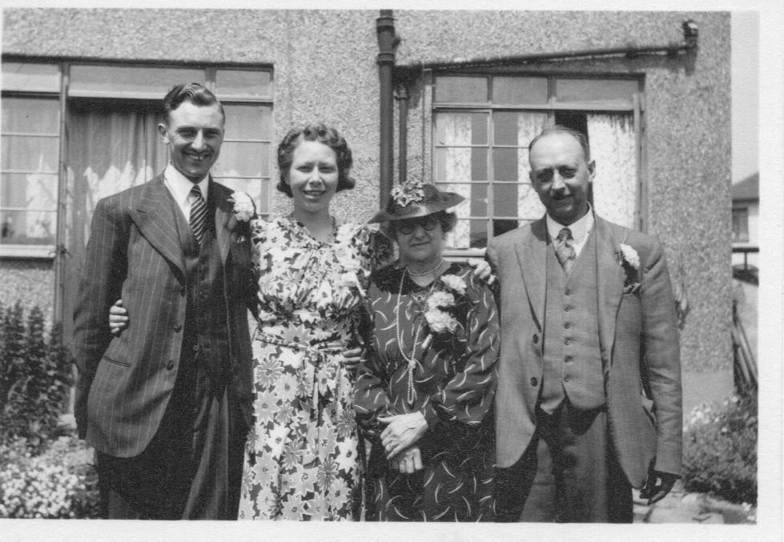
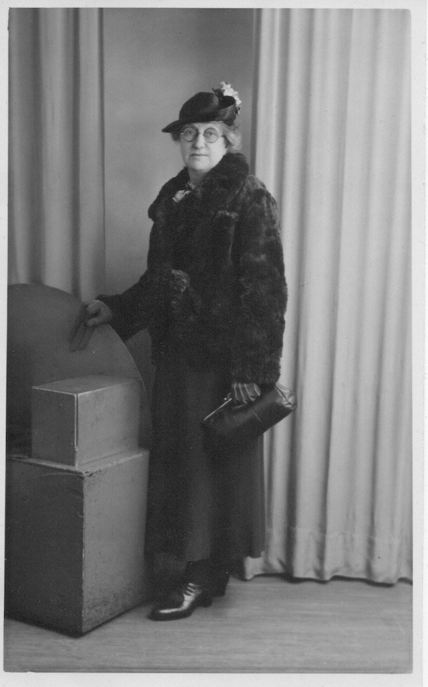
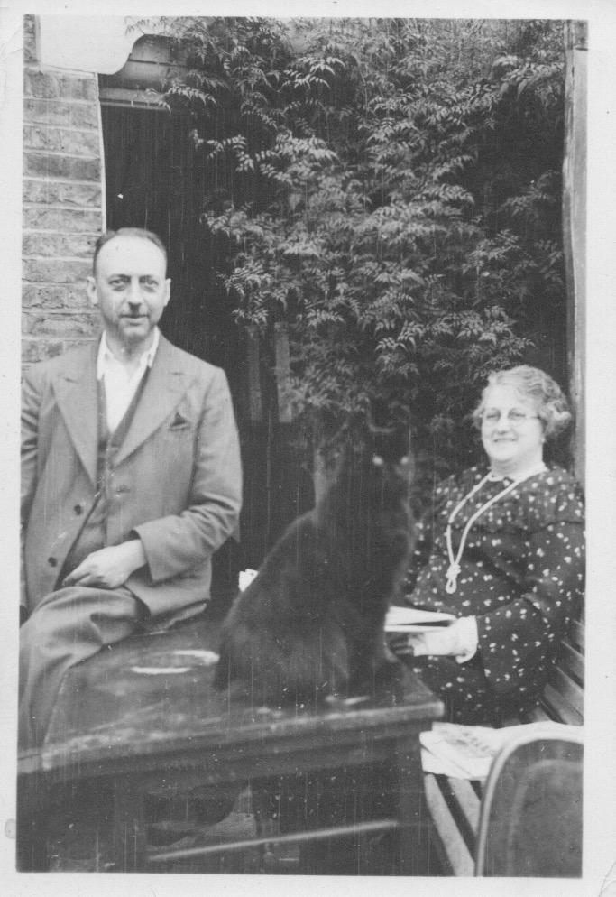

Born 18th April 1913.
Married to Olive on 8th June 1940.
The earlist photo we have of John is with his family, father Percy, mother Rose and elder brother Stanley, taken in 1917. Clearly, Percy served in the Army during the First World War.
John was a quantity surveyor, working for the same company (under various names and mergers) in the City of London for most of his working life.
This photo was taken in 1937, three years before he married Olive.
In this photo, taken in 1943, we see John and Olive standing with his parents in the garden of what appears to be Olive's mother's house in Woodside Avenue, Chislehurst.
These final two photos show Percy and Rose, with big cat, (at some unknown date and in an unknown place) and Rose taken in 1940.